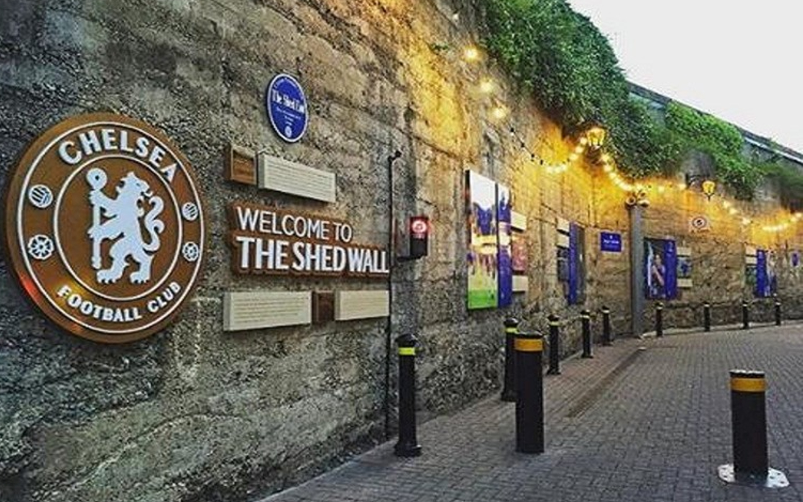

I like watching sports, including football, rugby, and Formula 1. My favourite sport has to be football I'm a massive Chelsea fan and try to watch every game they play on the TV.
Chelsea Football Club is based in Fulham in London so I don't manage to go and watch games as much as I'd like. When I do go to watch a Chelsea game it's a massive day out we usually travel to London with a group of supporters by train. When we get to London we have some drinks in one of the supporter's pubs and walk to Stamford Bridge to watch the game.

Outside of Stamford Bridge

London Waterloo train station